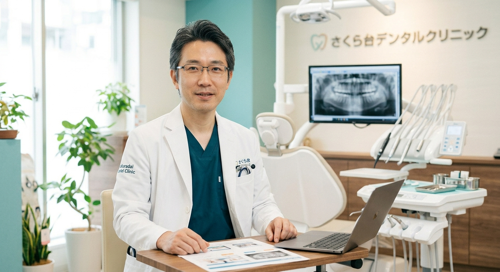
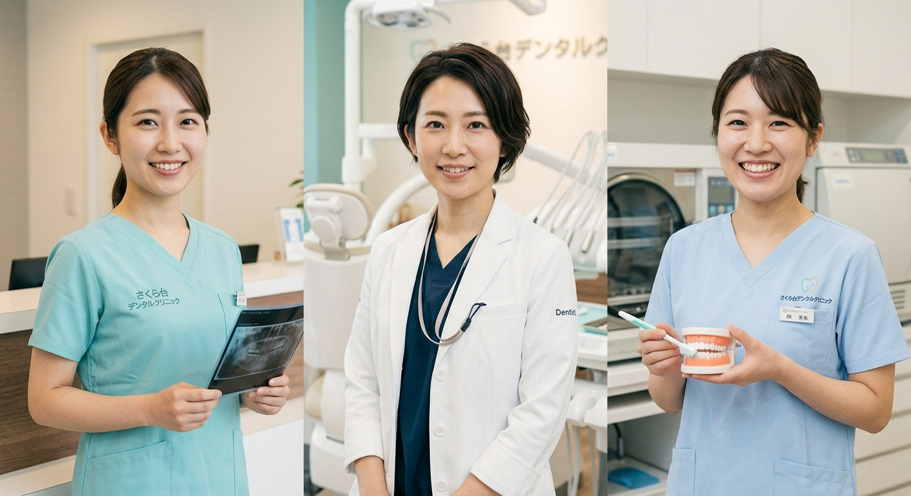

駅前医療ビル2階 / 患者様お一人おひとりに寄り添った丁寧なカウンセリング
当院は予約優先制です。診療時間をご確認のうえご来院ください。
| 診療時間 | 月 | 火 | 水 | 木 | 金 | 土 | 日/祝 |
|---|---|---|---|---|---|---|---|
| 09:30 - 13:00 | ○ | ○ | ○ | ○ | ○ | ○ | 休 |
| 14:30 - 19:00 | ○ | ○ | ○ | 休 | ○ | 休 | 休 |
※木曜午後・土曜午後・日曜・祝日は休診日となります。
※Webからのご予約は【前日まで】受付可能です。当日のご予約はお電話にてお問い合わせください。
所在地：東京都○○区さくら台1-2-3 さくら台駅前ビル2F（駅徒歩1分）
提携駐車場：ビル隣接のコインパーキングをご利用いただけます。
受診された患者様には【30分無料サービス券】をお渡ししております。お会計時に駐車券をご提示ください。

「丁寧で分かりやすい説明と、安心して通える環境づくり」を大切に、さくら台の地で開院して9年目を迎えました。お口に関する小さなお悩みでも、お気軽にご相談ください。
院長：藤井 雅彦
＞ 院長の経歴・診療方針はこちら
当院では明るい笑顔と丁寧な対応で、患者様が安心して通院していただける環境づくりを心掛けております。
当院では、保険診療を中心に幅広いお悩みに対応しております。
また、患者様の多様な選択肢に対応するため、以下の自費診療（保険外診療）にも対応しております。
※自費診療の詳しい費用・治療期間・リスクや注意点については、詳細ページにて丁寧にご説明しております。
＞ 診療メニュー・費用・リスクの詳細はこちら